Umetna inteligenca
V literaturi in na spletu obstaja več različnih definicij umetne inteligence – UI (ang. Artificial Intelligence – AI). Povsem enoznačne opredelitve tega, kaj je UI, kje se uporablja in kakšno vlogo ima, pravzaprav ni. Lahko gre za kompleksen samostojen sistem (kot so npr. roboti ali avtonomna vozila), lahko pa gre le za nekaj vrstic kode znotraj določene programske opreme, ki v tem programu igra zelo majhno vlogo.
Poleg tega se številni strokovnjaki ne strinjajo z uporabo besede »inteligenca« v tej besedni zvezi – umetna inteligenca namreč ni zares podobna človeški inteligenci, vsaj zaenkrat ne.
Pri/po tej učni enoti boš:
- poznal(-a) različna področja uporabe umetne inteligence,
- poznal(-a) splošen način delovanja različnih sistemov umetne inteligence.
Ta učna enota je povzeta po interaktivnem spletnem priročniku Umetna inteligenca za učitelje, katerega avtorja sta Colin de la Higuera in Jotsna Iyer.
UI ni omejena na robotiko – je širše področje, ki vključuje različne tehnologije,
kot so iskalni algoritmi in obdelava naravnega jezika.
Umetna inteligenca je povsod
V literaturi in na spletu obstaja več različnih definicij umetne inteligence – UI (ang. Artificial Intelligence – AI). Povsem enoznačne opredelitve tega, kaj je UI, kje se uporablja in kakšno vlogo ima, pravzaprav ni. Lahko gre za kompleksen samostojen sistem (kot so npr. roboti ali avtonomna vozila), lahko pa gre le za nekaj vrstic kode znotraj določene programske opreme, ki v tem programu igra zelo majhno vlogo.
UI vključuje skupek programov, ki opravljajo različne naloge. V strogo matematičnem smislu so meje med tem, kje se začne UI in končajo druge tehnologije, zabrisane.
Poleg tega se številni strokovnjaki ne strinjajo z uporabo besede »inteligenca« v tej besedni zvezi – umetna inteligenca namreč ni zares podobna človeški inteligenci, vsaj zaenkrat ne.
Kljub temu pa nam ta izraz pove nekaj o tem, kaj naj bi bili takšni programi sposobni narediti. Sistemi UI so torej zasnovani na strojih (napravah). Predvidevanja, priporočila ali odločitve sprejemajo na podlagi:
- zaznavanja resnične ali virtualne okolice (s pomočjo različnih senzorjev, na primer s pomočjo mikrofona ali kamere),
- poenostavitve in analize podatkov.
Definicije UI, ki uporabljajo »intelligence«, »mind« ali »thinking«
»The exciting new effort to make computers think... [as] machines with minds, in the full and literal sense.« (Haugeland, 1985)
»The art of creating machines that perform functions that require intelligence when performed by people.« (Kurzweil, 1990)
»The study of how to make computers do things which, at the moment, people are better.« (Rich and Knight, 1991)
»Making machines intelligent; intelligence is that quality that enables an entity to function appropriately and with foresight in its environment.« (Nils Nilsson)
Kako veš, da sistem uporablja UI?
- Sistem prepozna, kaj si napisal(-a) ali kaj govoriš (programska oprema za prevajanje / prepoznavanje besedila / prepoznavanje obraza; osebni asistenti, klepetalnice ipd.).
- Dlje ko uporabljaš določen sistem, bolje te pozna (priporočila za videoposnetke na YouTubu / novice / izdelke na Amazonu; predlogi za prijateljstva na Facebooku, ciljno usmerjeni oglasi ipd.).
- Sistem je sposoben napovedati izid na podlagi nepopolnih in hitro spreminjajočih se informacij (najhitrejša pot do želene destinacije, cene delnic v bližnji prihodnosti ipd.).
Modeli in priporočila
Aktivnost
Na spodnjih slikah so prikazane kartične transakcije dveh oseb, ki živita v Nantesu. Razmišljata o tem, kaj bi počela naslednji konec tedna. Kaj bi priporočili Arnaudu in kaj Yannicku? Izbirate lahko med naslednjimi možnostmi:
- Obisk nove poslovalnice s hitro prehrano
- Degustacija oljčnega olja
- Obisk spletne trgovine s potovalno opremo
- Koncert ob reki
- Tečaj plavanja za otroke
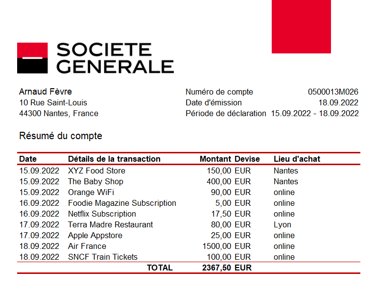
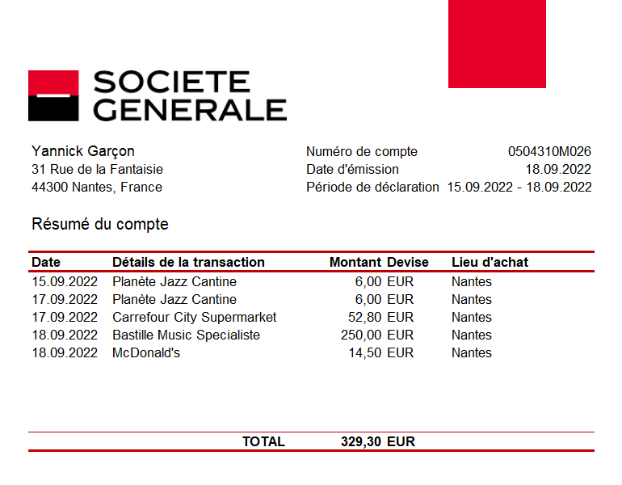
Sistemi priporočil obstajajo vsaj tako dolgo kot turistični vodniki ali seznami tipa »deset najboljših«. Medtem ko izbor časnika The Guardian – Best Books of 2022 vsem priporoča isti seznam knjig, bi si ga verjetno prilagodil(-a), če bi izbiral(-a) zase: izbral(-a) bi le nekaj knjig in spremenil(-a) bi vrstni red branja glede na svoje osebne preference.
Kako pa priporočiti nekaj nekomu, ki ga ne poznamo? Pri aktivnosti si si verjetno poskušal(-a) predstavljati Arnaudove in Yannickove osebnosti na podlagi danih informacij: uporabil(-a) si lastno presojo in vsaj nezavedno so nate vplivali tudi stereotipi. Nato si na podlagi ustvarjene predstave o tipu njunih osebnosti s seznama izbral(-a) tiste možnosti, ki bi lahko bile (ali pa tudi ne) pomembne zanju. Priporočilni sistemi podjetij, kot so Amazon, Netflix ali YouTube, uporabljajo podoben postopek.
Ko danes iščemo informacije ali želimo poiskati določene vsebine na spletu, vsi uporabljamo določeno vrsto personaliziranih sistemov priporočil. Ena od glavnih funkcij YouTuba je, da uporabnikom predlaga, kaj naj si ogledajo izmed vseh videoposnetkov, ki so na voljo na platformi. Pri vpisanih (prijavljenih) uporabnikih se zanaša na njihove pretekle aktivnosti, na podlagi katerih ustvari »model« ali tip osebnosti. Ko ustvari model za Yannicka, lahko prepozna druge s podobnim modelom. Yannicku zato priporoči videoposnetke, podobne tistim, ki jih je že gledal in videoposnetke, podobne tistim, ki so si jih ogledali drugi, njemu podobni uporabniki.
Model je poenostavljena reprezentacija oziroma predstavitev sveta, zaradi katere se lahko stroj »pretvarja«, da razume svet okrog sebe:
Modeli in priporočila
Vsi sistemi priporočil (ang. Recommendation systems) vključujejo podvprašanja. Najosnovnejše vprašanje – kaj priporočiti? – je nekoliko preveč splošno in nenatančno za algoritem. YouTube sprašuje po času (trajanju) gledanja za določenega uporabnika v določenem kontekstu. Izbira tega, kaj vprašati (in kaj napovedati), ima velik vpliv na to, kakšno priporočilo bo prikazano. Ideja v ozadju je, da bo pravilna napoved pripeljala do dobrega priporočila. Sama napoved pa temelji na drugih uporabnikih z zgodovino podobnih iskanj, torej na uporabnikih, ki jih predstavljajo podobni modeli.
Uporabniški modeli
YouTube sistem priporočanja razdeli na dva koraka in za vsakega uporablja različne modele. Tukaj bomo uporabili nekoliko preprostejšo razlago.
Za izdelavo uporabniškega modela se morajo njegovi razvijalci vprašati, kateri podatki so pomembni za priporočanje videoposnetkov. Kaj si je uporabnik že ogledal? Kakšne ocene je podal in kakšne preference je izrazil? Kaj je iskal? Veliko bolj kot takšne eksplicitne informacije YouTube uporablja tiste bolj implicitne, saj so lažje dostopne. Ali je uporabnik samo kliknil na videoposnetek, ali si ga je dejansko ogledal? Če si ga je ogledal, kako dolgo je trajal ogled? Kako se je odzval na pretekla priporočila? Ali je katera od priporočil prezrl? Poleg odgovorov na ta vprašanja so pomembni tudi demografski podatki, kot so spol, jezik, lokacija in vrsta naprave, če je uporabnik nov ali ni prijavljen/vpisan.
Ko je za vsakega uporabnika izdelan model, postane razvidno, kateri uporabniki so si med seboj podobni, in te informacije uporabijo za oblikovanje priporočil.
Video modeli
Na podoben način kot pri uporabnikih YouTube označuje videoposnetke, ki so si med seboj podobni (ali različni). Za vsak videoposnetek pregleda njegovo vsebino, naslov in opis ter kakovost posnetka, število ljudi, ki si ga je ogledalo (število ogledov), ga všečkalo, ga dodalo med priljubljene, ga komentiralo ali delilo, čas, ko je bil naložen in število uporabnikov, ki spremljajo dotični kanal.
Kaj si bo uporabnik ogledal po izbranem posnetku je odvisno tudi od tega, ali je videoposnetek element obsežnejše serije in ali je morda del seznama predvajanja (ang. playlist). Če uporabnik, na primer, šele odkriva določenega glasbenega izvajalca, bo morda nadaljeval od najbolj priljubljene skladbe k manj znanim. Verjetno je tudi, da uporabnik ne bo kliknil na videoposnetke, ki so opremljeni s sličicami (ang. thumbnails) slabe kakovosti. Vse te informacije so vključene v proces ustvarjanja modela.
Eden od bistvenih elementov sistema priporočil je prehod od enega videoposnetka na seznam sorodnih videoposnetkov. V tem kontekstu velja, da so sorodni videoposnetki tisti, ki si jih bo uporabnik verjetno naslednje ogledal. Namen sistemov priporočanja je iz podatkov izluščiti kar največ in tako ustvarjati boljša priporočila.
Modeli in priporočila
Google v vseh svojih produktih uporablja globoke nevronske mreže za strojno učenje. Na podlagi video modela YouTubova nevronska mreža zabeleži videoposnetke, podobne tistim, ki jih je uporabnik že gledal. Nato poskuša napovedati čas gledanja vsakega novega videoposnetka za dani uporabniški model in jih razvrsti na podlagi napovedi. Na koncu prikaže 10 do 20 videoposnetkov (odvisno od naprave) z najvišjimi ocenami.
Proces je podoben modelu strojnega učenja, ki smo ga že opisali. Stroj v tem primeru najprej zabeleži značilnosti uporabniških in video modelov, ki jih je podal programer. Iz sklopa učnih podatkov se nauči, kakšno utež naj dodeli posamezni značilnosti, da bo pravilno napovedal čas (trajanje) ogleda. Nato, po testiranju in potrditvi, da pravilno deluje, lahko začne ustvarjati oziroma generirati napovedi in priporočila.
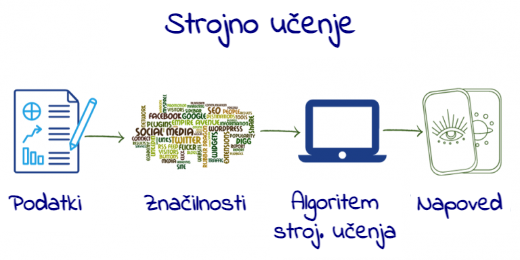
Učenje
V fazi učenja se sistemu posreduje na milijone pozitivnih in negativnih primerov. Pozitiven primer je, ko uporabnik klikne na videoposnetek in si ga določen čas ogleduje. Negativen primer je, ko uporabnik ne klikne na videoposnetek ali si ga ne ogleduje dovolj dolgo.
Nevronska mreža dobi informacijo o značilnostih uporabnika in videoposnetka. Utež vsake vhodne značilnosti prilagodi tako, da preveri, ali je bil čas gledanja za določen videoposnetek in uporabnika pravilno napovedan. Na stotinah milijard primerov se nauči približno milijardo parametrov (uteži vsake značilnosti). Mreža se lahko nauči tudi, da določenih značilnosti ne upošteva (dodeli jim ničelno pomembnost/utež). Zato je lahko model, ki ga ustvari algoritem, zelo drugačen od tistega, ki so si ga zamislili razvijalci.
Testiranje
Ko nevronska mreža konča z učenjem, jo preizkusijo na že razpoložljivih podatkih in po potrebi prilagodijo. Poleg natančnosti napovedi mora programer nastaviti izhod sistema na podlagi več vrednostnih sodb.
Prikazovanje videoposnetkov, ki so preveč podobni že videnim zagotovo ne bo preveč zanimivo. Kaj v resnici pomeni, da je neko priporočilo dobro? Koliko podobnih posnetkov je treba prikazati in kako raznoliki naj bodo – z ozirom na druge posnetke in na zgodovino uporabnika? Koliko uporabnikovih interesov naj upošteva? Katere vrste priporočil imajo za posledico takojšnje zadovoljstvo, in katere dolgoročno uporabo? To so pomembna vprašanja, ki jih je treba upoštevati.
Testiranju sledi ocenjevanje priporočil v realnem času. Izmeri se skupni čas gledanja za posamezen sklop napovedanih posnetkov. Dlje, kot si uporabnik ogleduje priporočeni sklop videoposnetkov, uspešnejši je model. Zgolj podatek o številu klikov na videoposnetke ne zadostuje za objektivno ocenjevanje. YouTube ocenjuje svoje priporočilne sisteme na podlagi tega, koliko priporočenih videoposnetkov je bilo pogledanih (skoraj) v celoti ter na podlagi skupne dolžine seje, časa do prvega daljšega ogleda in deleža prijavljenih uporabnikov.

Vmesnik
Na koncu si poglejmo še, kako so priporočila predstavljena gledalcu: koliko posnetkov naj se prikaže? Ali naj se najboljša priporočila prikažejo naenkrat, ali naj sistem nekatera prihrani za pozneje? Kakšen način prikaza izbrati za sličice in naslove videoposnetkov? Katere druge informacije je potrebno prikazati? Katere nastavitve lahko nadzoruje uporabnik? V odgovorih na ta vprašanja se skriva YouTubova skrivnost ohranjanja dveh milijard uporabnikov pred zasloni 24 ur na dan.
Strojno prevajanje
Orodja za samodejno strojno prevajanje (ang. machine translation), ki so danes na voljo na spletu, so preprosta za uporabo in omogčajo strojne prevode besedil v številne svetovne jezike. Nekatera od teh orodij so razvili spletni velikani (na primer Google Prevajalnik / Google Translate), na trgu pa so tudi specializirana orodja neodvisnih razvijalcev programske opreme (na primer DeepL).
Samodejno prevajanje je predstavljalo zgodovinski izziv za UI. V zadnjih letih so v ta namen uporabili in preizkusili različne tehnologije UI. Sisteme, ki temeljijo na pravilih so z dostopnostjo podatkovnih baz vzporednih besedil nadomestile statistične tehnike strojnega učenja. V zadnjih petih letih najsodobnejšo tehnologijo na tem področju predstavljajo tehnike globokega učenja.
Če ste se lahko še pred nekaj leti ob preizkušanju takšnih orodij prijetno razvedrili, celo zabavali ob prevodih besedil priljubljenih pesmi ali raznih menijev, danes to ni več tako.
- Številne mednarodne institucije razmišljajo o uporabi orodij za samodejno prevajanje kot podpori večjezičnosti.
- Velike medijske video platforme uporabljajo samodejno prevajanje za boljši stik z uporabniki.
- Dvojezični posamezniki in profesionalni prevajalci takšna orodja uporabljajo v poklicnem in zasebnem življenju.
Pri samodejnem prepisovanju oziroma transkripciji uporabljamo tudi umetno inteligenco: gre za pretvorbo glasovnega vnosa v izhodno besedilo. To se lahko izvede na videoposnetkih ali zvočnih posnetkih brez povezave ali na spletu: nekatere platforme za videokonference na ta način omogočajo pridobitev podnapisov, ki jih lahko uporabimo za izboljšanje dostopnosti in/ali razumevanje govora iz drugega jezika.
Tehnike sinteze glasu prevzamejo besedilo in glasovni model, ki besedilo govori s tem glasom. Glasovni model je lahko standarden ali pa ga je mogoče tudi usposobiti, da ustreza resničnim ljudem!
Orodja za ustvarjanje besedila se uporabljajo za ustvarjanje novega besedila s pomočjo umetne inteligence: to novo besedilo lahko temelji na obstoječem besedilu (na primer oblikovanje povzetkov, poenostavitev ali reformulacija obstoječega besedila) ali temelji na pogovornih modelih, pri katerih umetna inteligenca ustvari besedilo o določeni temi.
V prihodnje se obeta še veliko več izboljšav strojnih prevajalnikov. Kakovost prevodov se povečuje. Razne rešitve, ki združujejo prevode, transkripcije in sintezo govora, kar omogoča približevanje idealu brezhibne večjezične komunikacije, bodo v kratkem postale nekaj običajnega.
Globoke nevronske mreže
Človeško znanje je obsežno, spremenljivo in težko opredeljivo. Človeški um je sposoben absorbirati in uporabljati znanje, ker je, kot so zapisali Chomsky, Roberts in Watumull,
Strojno učenje naj bi to počelo z iskanjem vzorcev v velikih količinah podatkov. Prej pa so morali programerji ročno kodirati, določiti katere značilnosti podatkov so pomembne za obravnavani problem, in jih posredovati stroju v obliki »parametrov«. Kot smo že povedali, je delovanje sistema močno odvisno od kakovosti podatkov in parametrov, ki jih ni vedno enostavno natančno določiti.
Globoke nevronske mreže (ang. deep neural networks) ali globoko učenje (ang. deep learning) predstavlja vejo strojnega učenja, ki omenjeno premaguje:
- z ekstrahiranjem lastnih parametrov iz podatkov v fazi učenja;
- z uporabo več plasti, ki gradijo razmerja med parametri, postopoma gredo od preprostih reprezentacij v najbolj zunanji plasti do bolj kompleksnih in abstraktnih. To globokemu učenju omogoča, da določene naloge opravi bolje kot običajni algoritmi strojnega učenja.
Vse več zmogljivih aplikacij strojnega učenja se vedno bolj zanaša na globoko učenje. Sem spadajo iskalniki, sistemi priporočil, transkripcija govora in tudi prevod tega priročnika iz angleščine v slovenščino. Brez pretiravanja lahko rečemo, da je prav globoko učenje omogočilo uspeh UI pri številnih nalogah.
Izraz »globoke« (globoke nevronske mreže) se nanaša na to, kako se plasti nalagajo ena na drugo, da ustvarijo mrežo. Izraz »nevronske« odraža dejstvo, da so določene vidike njihove zasnove navdihnile povezave med nevroni v človeških bioloških možganih. Kljub temu pa, in čeprav zagotavljajo vpogled v naše lastne miselne procese, so to strogo matematični modeli, ki v resnici niso podobni nobenemu biološkemu elementu ali procesu.
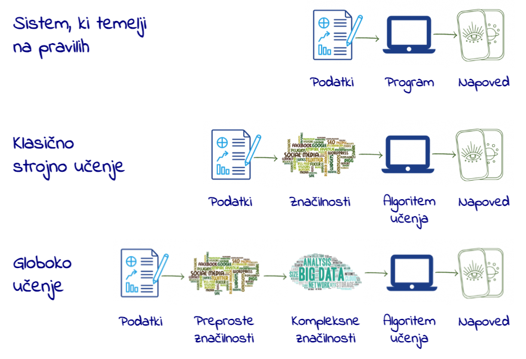
Oblikovanje globoke nevronske mreže
Ko se programer odloči za uporabo globokega učenja in pripravi podatke, mora najprej zasnovati tako imenovano arhitekturo svoje nevronske mreže. Določiti mora število plasti (globina mreže) in število parametrov na plast (širina mreže). Nato se mora odločiti, kako vzpostaviti povezave med plastmi – ali bo vsaka enota plasti povezana z vsako enoto prejšnje plasti ali ne.
Idealna arhitektura za določeno nalogo pogosto se pogosto izkaže kot posledica eksperimentiranja. Večje kot je število plasti, manj parametrov je potrebnih na vsaki plasti. Mreže delujejo bolje s splošnimi podatki, čeprav jih je zato težje optimizirati. Manj povezav bi pomenilo manj parametrov in manj računanja, vendar bi to zmanjšalo prilagodljivost mreže.
Osnove globokega učenja
Ko ljudje gledamo sliko, na njej avtomatično prepoznamo predmete in obraze. Za algoritem pa slika ni nič drugega, kot le zbirka slikovnih točk oziroma pikslov. Med mešanico barv in različnimi stopnjami svetlosti ter prepoznavanjem obrazov je velikanski preskok, ki ga je preveč zapleteno izvesti.
Globoka nevrosnka mreža to doseže tako, da proces razdeli na zelo preproste reprezentacije v prvi plasti – na primer tako, da primerja svetlost dveh sosednjih pikslov in tako ugotovi prisotnost ali odsotnost robov na različnih predelih slike. Naslednja plast na podlagi robov išče bolj kompleksne entitete – na primer, vogale in obrobe, pri čemer zanemari majhna odstopanja pri položajih robov. Naslednja plast išče dele predmetov z uporabo obrob in vogalov. Postopoma se kompleksnost povečuje do točke, ko lahko zadnja plast združi različne dele dovolj dobro, da prepozna obraz ali identificira predmet.
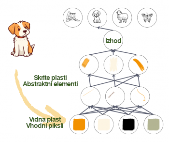
Tega, kar je treba upoštevati v vsaki plasti, ne določajo programerji, temveč se tega sistem nauči iz podatkov v procesu učenja. S primerjanjem napovedi z dejanskimi rezultati v učnem sklopu podatkov se delovanje vsake plasti uravna na nekoliko drugačen način, kar obrodi vsakič nekoliko boljši rezultat.
Če je vse to izvedeno pravilno in pod pogojem, da je na voljo dovolj kakovostnih podatkov, bi se morala mreža razviti tako, da bo prezrla nepomembne dele slike, na primer natančno lokacijo entitet, kot in osvetlitev, ter se osredotočila na tiste dele, ki ji omogočajo prepoznavanje.
Tukaj je treba opozoriti na dejstvo, da je kljub naši uporabi robov in obrob za razumevanje procesa tisto, kar je dejansko predstavljeno v plasteh, niz številk, ki lahko ustrezajo stvarem, ki jih razumemo, ali pa tudi ne. Kar se pri tem ne spremeni, je vse večja abstraktnost in kompleksnost.
Učenje globoke nevronske mreže
Vzemimo primer usmerjene nevronske mreže z nadzorovanim učenjem. Informacije tečejo naprej od ene plasti k naslednji, globlji plasti, brez povratnih zank. Kot pri vseh tehnikah strojnega učenja je tudi tukaj cilj ugotoviti, kako so vhodi povezani z izhodi – kateri parametri se združijo in kako se združijo, preden ustvarijo rezultat. Predpostavimo razmerje oziroma funkcijo $f$, ki povezuje vhod $x$ z izhodom $y$. Nato uporabimo mrežo, da poiščemo niz parametrov $θ$, ki dajejo najboljše ujemanje za napovedane in dejanske izhodne vrednosti.
Pri tem je napoved za $y$ končni rezultat, sklop podatkov $x$ pa je vhod. Pri prepoznavanju obraza je $x$ običajno sklop pikslov na sliki, $y$ je lahko ime osebe. V mreži plasti delujejo podobno kot delavci v proizvodni liniji, kjer se vsak delavec loti tistega, kar mu je bilo dodeljeno, potem pa to posreduje naprej naslednjemu delavcu. Prvi delavec vzame vhodno vrednost in jo malo preoblikuje, nato jo da drugemu v liniji. Drugi naredi isto, nato preda tretjemu in tako naprej, dokler se vhodna vrednost ne preoblikuje v končni rezultat.
Matematično je funkcija f razdeljena na več funkcij $f1$, $f2$, $f3$ ... pri čemer je $f = … f3(f2(f1(x)))$. Plast poleg vhoda preoblikuje parametre vhoda z uporabo $f1$, naslednja plast z uporabo $f2$ in tako naprej. Programer lahko pri tem posreduje, tako da pomaga izbrati pravilno družino funkcij na podlagi poznavanja problema.
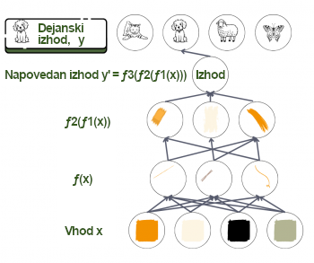
Osnove globokega učenja
Naloga vsake plasti je, da dodeli raven pomembnosti – utež, ki jo dodeli vsakemu prejetemu parametru. Uteži so kot stikala, ki na koncu opredelijo razmerje med predvidenim izhodom in vhodom v določeni plasti. V povprečnem sistemu globokega učenja je takšnih »stikal« na stotine milijonov, kot je tudi na stotine milijonov učnih primerov. Ker ne določamo, niti ne moremo videti izhodnih vrednosti in uteži v plasteh med vhodno in izhodno vrednostjo, se takšne plasti imenujejo skrite plasti.
Ključno vprašanje: Pri katerem parametru $θ$ je napovedani $y$ enak $f(x, θ)$?
Pri prejšnjem primeru prepoznavanja predmeta je naloga prvega »delavca« v globoki nevronski mreži, da zazna robove in jih preda drugemu delavcu, ki bo zaznal obrobe, in tako naprej.
V fazi učenja se napovedana izhodna vrednost primerja z dejansko izhodno vrednostjo. Če med njima obstaja velika razlika, je treba toliko bolj spremeniti uteži, dodeljene v vsaki plasti. Če je razlika majhna, je potrebno le malo prilagoditi vrednosti uteži. Ta proces poteka v dveh delih. Najprej se izračuna razlika med napovedjo in rezultatom (izhodom), nato pa drug algoritem izračuna, kako prilagoditi uteži v vsaki plasti, začenši z izhodno plastjo (v tem primeru informacije tečejo nazaj iz globljih plasti). Tako je na koncu procesa učenja mreža z vsemi svojimi utežmi in funkcijami pripravljena za obdelavo testnih podatkov. Preostali del procesa je enak kot pri klasičnem strojnem učenju.
Obdelava naravnega jezika
Obdelava naravnega jezika (ang. Natural language processing – NLP) je tema številnih raziskav že zadnjih 50 let. Nekatera izmed raziskovalnih prizadevanj na tem področju so privedla do razvoja orodij, ki jih uporabljamo vsak dan:
- urejevalniki besedil,
- samodejni predlogi za slovnične in pravopisne popravke,
- samodejno zapolnjevanje podatkov,
- optično prepoznavanje znakov (OCR).
V zadnjem času imajo na vseh področjih življenja velik vpliv predvsem klepetalni roboti, pametni/hišni/osebni asistenti in prevajalniki.

Dolgo časa je raziskave in industrijo na tem področju upočasnjevala notranja zapletenost jezika. Ob koncu 20. stoletja so slovnice (rezultat dela področnih strokovnjakov) različnih jezikov vsebovale tudi do 50.000 pravil. Takšni ekspertni sistemi so nakazovali možnost izboljšav s pomočjo tehnologije, vendar so bile zanesljive oziroma univerzalne rešitve prezapletene za razvoj.
Po drugi strani je tehnologija prepoznavanja govora zahtevala obdelavo akustičnih podatkov in njihovo pretvorbo v besedilo. Ob vsej raznolikosti govorcev je bil to zares trd oreh.
Raziskovalci so dojeli, da bo to lažje izvedljivo s pomočjo modela jezika. Če model pozna besedišče izbranega jezika in pravila za tvorjenje stavkov, bo iz serije predlogov lažje izbral tisti pravi stavek, ki bo ustrezal zapisanemu/izrečenemu, oziroma, lažje bo izbral prevodno ustreznico izmed niza možnih zaporedij besed.
Obdelava naravnega jezika
Drug ključni vidik pri tem je semantika (pomenoslovje). Največ, kar lahko tehnologija stori pri reševanju jezikovnih vprašanj, je pravzaprav površinske narave: algoritem predlaga odgovor na podlagi določenih skladenjskih pravil. Nič zato, če na koncu besedilo nima nobenega smisla. Podobno bi se lahko zgodilo pri branju besedil učencev – če bi samo popravljali napake, ne da bi zares razumeli, o čem besedilo govori. Bistvo je v seveda v pomenu, ki ga pripišemo besedilom oziroma izrečenim besedam.
Leta 2008 je prišlo do preboja: ustvarjen je bil edinstven jezikovni model, ki se je učil iz velikanske količine podatkov in ga je bilo mogoče uporabiti za različne jezikovne naloge. Dejansko je deloval bolje kot modeli, ki so bili naučeni izvajati posamezne od teh nalog.
Ta model je bil globoka nevronska mreža. Čeprav ni bila niti približno tako globoka kot mreže, ki se uporabljajo danes, so bili rezultati dovolj prepričljivi, da so raziskovalci pričeli verjeti, da bo strojno učenje, natančneje globoko učenje, odgovor na številna vprašanja glede NLP.
Od takrat tehnologije NLP niso več sledile pristopu na osnovi modelov, temveč se je uveljavil pristop, ki temelji na podatkih. Jezikovne naloge v tem smislu razdelimo na dva sklopa: tiste, ki vključujejo ustvarjanje modelov, in tiste, ki vključujejo dekodiranje.
Ustvarjanje modelov
Če želite prepis (transkripcijo), odgovor na vprašanje, dialog ali prevod, morate najprej vedeti, ali je na primer stavek »Je parle Français« res veljaven stavek v francoščini ali ne. In ker pri govorjenem jeziku slovnična pravila niso vedno natančno upoštevana, bo odgovor izražen z verjetnostjo: stavek je bolj ali manj francoski. Na podlagi tega tudi sistem pripravi različne predloge stavkov (transkripcijo slišanega, prevod stavka itd.), in verjetnost ustreznosti tudi razvrsti (oceni). Uporabnik nato lahko izbere stavek z najvišjo oceno (tj. z najvišjo verjetnostjo ustreznosti) ali pa to informacijo kombinira z drugimi viri informacij (pomen stavka).
Prav to počnejo jezikovni modeli: verjetnosti izračunajo na podlagi algoritmov strojnega učenja. Čim več podatkov je na voljo, tem bolje. Za nekatere jezike je na voljo veliko podatkov, na podlagi katerih lahko ustvarimo jezikovne modele, pri drugih jezikih pa ni tako.
Za nalogo prevajanja nista potrebna dva, temveč trije modeli: jezikovni model za vsakega izmed obeh jezikov in še en model za prevode, ki nam pove, kateri prevodi fragmentov jezika so boljši oziroma ustreznejši. Takšne modele je težko izdelati, če je podatkov malo. Medtem, ko je modele za pogoste »jezikovne pare« lažje izdelati, to ne velja za jezike, ki se ne uporabljajo pogosto »v paru« (na primer portugalščina in slovenščina). Tipična rešitev pri tem je uporaba / prevajanje preko vmesnega jezika (običajno angleščine): iz portugalščine v angleščino in nato iz angleščine v slovenščino. To seveda vodi do manj ustreznih rezultatov, saj se napake kopičijo.
Obdelava naravnega jezika
Dekodiranje
Dekodiranje (ang. decoding) je proces, pri katerem algoritem sprejme vhodno zaporedje (v obliki signala ali besedila) in na podlagi informacij, ki jih vsebuje model, sprejme odločitev, pogosto v obliki izhodnega besedila. Pri tem je treba upoštevati določene zakonitostmi algoritmov: transkripcija in prevajanje morata običajno potekati v realnem času, zato je pri tem ključno vprašanje zmanjševanje časovnega zaostanka. Prostora za delovanje UI je tu veliko.
Celovit pristop
Procese ločenega ustvarjanja in kasneje kombiniranja teh komponent je danes nadomestil celovit pristop, pri katerem sistem zapiše / prevede / interpretira vhodne podatke s pomočjo edinstvenega modela. Trenutno se taki modeli učijo s pomočjo izjemno zapletenih globokih nevronskih mrež: največji model GPT3 naj bi obsegal več sto milijonov parametrov.
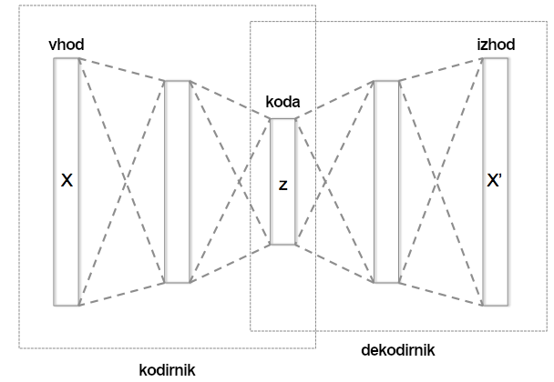
Poskusimo poenostaviti: recimo, da imamo določene podatke. Te surove podatke lahko na poljuben način zakodiramo. Toda kodiranje je lahko redundantno in morda celo zelo drago. Zato izdelamo posebno napravo, samodejni kodirnik (ang. autoencoder) – glej sliko. Stroj izvorno besedilo prenese v majhen vektor (kodirnik), nato pa vektor razširi (dekodirnik) in ponovno vzpostavi besedilo, ki je nekako blizu izvornemu besedilu. Ideja je v tem, da ta mehanizem ustvari zelo koristen vmesni vektor – zaradi dveh zaželenih lastnosti: je majhen, in »vsebuje« informacije o izvornem besedilu.
Prihodnost
Verjetno bodo takšni celoviti pristopi kmalu omogočali, da bo vmesnik (1) slišal in prepoznal, kateri jezik govorite, (2) zapisal izgovorjeno besedilo, (3) ga prevedel v jezik, ki ga ne poznate, (4) usposobil sistem za sintezo govora za prepoznavanje vašega glasu in (5) z vašim glasom prebral ustrezno prevedeno besedilo v drugem jeziku.
Na posnetkih spodaj si oglejte dva primera, ki so ju zasnovali raziskovalci na Universidad Politecnica de Valencia v Španiji, v katerih je za sinhronizacijo uporabljen model lastnega glasu govorca.
Generativna umetna inteligenca
Zgodovina
Konec novembra 2022 je bil svetu predstavljen sistem ChatGPT, na UI zasnovan sistem klepetalnih robotov, utemeljen na jezikovnem modelu GPT-3.5, ki uporablja obdelavo naravnega jezika (NLP) za ustvarjanje oziroma generiranje pogovorov. Sistem ChatGPT je zadnji v celi vrsti takih orodij, vendar je za razliko od prejšnjih orodij pritegnil zanimanje javnosti in začel buriti človeško domišljijo. Že v prvem tednu po prihodu na tržišče je pridobil več kot milijon uporabnikov, zaradi človeku podobne sposobnosti generiranja besedil in potencialnih posledic uporabe v izobraževanju, na delovnih mestih in v vsakdanjem življenju. ChatGPT odgovarja na vprašanja in uporabniku pomaga pri nalogah, kot so pisanje e-poštnih sporočil, esejev in računalniške kode.
GPT-3 (ang. Generative Pre-trained Transformer-3) je velik jezikovni model (ang. Large language model – LLM), ki se je učil s pomočjo globokega učenja na ogromni količini podatkov (499 milijard podatkovnih točk – 800 GB podatkov), približno stokrat večji model kot kateri koli izmed prejšnjih modelov. ChatGPT pa s tem modelom omogoča »človeški« klepet. Povedano zelo preprosto, velik jezikovni model se nauči predvideti naslednjo besedo v stavku, na podoben način, kot to počne funkcija predvidevanja naslednje besede pri SMS sporočilih, in nato nadaljuje s tem procesom ter tako ustvari daljša besedila.

Od prihoda sistema ChatGPT je prišlo do številnih sprememb v zvezi z ustvarjanjem in razvojem orodij generativne UI. Nekatera izmed njih so prikazana na gornji časovnici. Pred novembrom 2022 je zelo malo ljudi vedelo, kaj sploh je generativna UI, nato pa je ChatGPT kar naenkrat postal vsakdanji izraz za milijone ljudi. Smernice kažejo, da se bodo te tehnologije še naprej razvijale in postajale vedno bolj uporabne.
Kaj je generativna UI?
Sistemi generativne UI ustvarjajo nove vsebine v obliki slik, besedil, zvoka, videoposnetkov, zmorejo pa še več ko to, na primer:
- ustvarjanje nove slike na podlagi obstoječe, npr. ustvarjanje novega portreta na podlagi obstoječe slike obraza ali nove pokrajine na podlagi obstoječe slike pokrajine;
- pisanje novic, poezije in celo scenarijev. Tudi prevajanje besedil iz enega jezika v drugega;
- ustvarjanje novih glasbenih posnetkov, zvočnih učinkov in glasovne sinhronizacije.
Seznam opravil se daljša. A začeli bomo tako, da bomo nekaj orodij generativne UI vprašali, kako je ChatGPT dobil svoje ime.
Izbranim orodjem (Google Gemini, Microsoft Copilot in OpenAi ChatGPT 3.5) smo postavili naslednjo iztočnico, poziv oziroma vprašanje (ang. prompt):
Si strokovnjak za UI. Predstavljaj si, da mladostnikom, starim od 12 do 18 let, razlagaš, kaj je ChatGPT in kako je dobil ime. Razloži, zakaj vključuje izraz »chat« (klepet), in opiši nekaj primerov uporabe. Odgovor napiši v obliki prepričljivega sestavka, ki razloži delovanje ChatGPT.
Ta orodja nam torej omogočajo pisanje iztočnic in nato pogovor (odtod izraz pogovorna UI) s sistemom ChatBot. Obstaja čedalje več načinov, mnoge načine omenjamo tudi v tej učni enoti, kako lahko ta orodja pomagajo uporabnikom. Orodja omogočajo seveda tudi pogovor oziroma klepet, zato razmisli, kdaj bi ti lahko bila ta orodja v pomoč – s sistemom lahko klepetaš o temi, ki jo moraš raziskati, se pripraviš na razgovor za službo ali ustvarite zamisel za raziskovalno nalogo. Zanimivo je primerjati podobnosti in razlike v rezultatih različnih sistemov pogovorne UI in nato izbrati najboljše glede na namen.
Orodja generativne UI lahko torej »oplemenitijo« tvoje delo ali ti pomagajo, da postaneš bolj ustvarjalen(-na), produktiven(-na) ali učinkovit(-a), s tem da združiš svoje umske sposobnosti s sposobnostmi stroja. Zabavaj se ob učenju oziroma preizkušanju klepetanja s temi orodji in se prepričaj o tem, kaj ustvarjajo ter ali lahko orodja uporabiš pri svojem delu.
Umetna inteligenca okoli nas
Danes je prav UI tista vrsta tehnologije, ki uporabniku zagotavlja konkurenčnost, potrebno za uspeh. UI se v takšni ali drugačni obliki uporablja praktično na vseh področjih človekovega delovanja:
- V poslovnem svetu in v raziskovalni dejavnosti so v uporabi različni programi za procesiranje jezika, ki v realnem času zapisujejo govor ali generirajo prevode besedil.
- Medicina izkorišča prednosti UI pri analizi medicinskih slik in pri orodjih za podporo odločanju.
- V kmetijskem sektorju sistemi, podprti z UI, pomagajo optimizirati uporabo razpoložljivih virov.
- Skoraj vsakodnevno beremo o novih prebojih tehnologij UI na področjih računalniških iger, umetnosti, industrije in trgovine.
- V šolah UI lahko pomaga pri izbiri učnega gradiva, pri personalizaciji učenja, pri konstruktivnem vrednotenju opravljenega dela in pri raznih logističnih nalogah.
Aktivnost
Sestavi seznam petih tehnologij, ki si jih uporabljal(-a) v zadnjih dveh letih. Koliko jih je podprtih z delovanjem UI?
Vse vrste podjetij danes uporabljajo podatke za odločanje o tem, kaj prodati, komu prodati, kakšno ceno določiti izdelkom ali storitvam in kako izbrati oglaševanje. Algoritmi strojnega učenja pa so tisto, kar vse te podatke osmisli. Zmaga tisti, ki ima boljše podatke in boljši algoritem: podatki so v sodobnem času dragoceni kot zlato, toda hkrati kot Ahilova peta predstavljajo potencialno šibkost.
Ali s »podatki« tukaj mislimo le na osebne naslove in številke bančnih računov? Kaj pa, na primer, število klikov z miško, ki jih uporabnik naredi med obiskom spletnega mesta?
Alan Turing in umetna inteligenca
Alan Turing je po mnenju mnogih oče računalništva. Veliko novih idej na področju umetne inteligence je pravzaprav predstavil Alan Turing, še preden je bil izumljen izraz »umetna inteligenca«!
Pri uporabi tehnologij je treba vselej imeti v mislih dve skrajnosti:
- neuporaba ali neizkoriščenje tehnologij zaradi strahu ali neznanja ter
- neselektivna uporaba, ki povzroča nezaželene sekundarne učinke.
Na primer, gotovo obstajajo potencialne nevarnosti, ki jih prinaša uporaba mobilnih telefonov. Določene skupnosti gredo v prvo skrajnost in mobilnih telefonov sploh ne uporabljajo. Večina od nas mobilne telefone uporablja »pravilno« in pri tem ne zlorablja možnih načinov njihove uporabe. Preudarna uporaba mobilne tehnologije je tudi že velikokrat rešila življenja.
Umetna inteligenca, ki bi bila sposobna kopirati človeške sposobnosti (učenje, razumevanje, dojemanje, sklepanje, odločanje, vest, čustva itd.) Tako imenovana »močna« umetna inteligenca, ki bi bila sposobna samostojnosti in vsestranskosti v nepričakovanih situacijah, je znanstveni cilj. Vendar pa trenutno obstajajo rezultati, ki kažejo, da je ta idealni cilj močne umetne inteligence (zaenkrat) tehnično nemogoč. Do danes močna umetna inteligenca še ne obstaja.
Umetna inteligenca, ki jo poznamo danes je »šibka« umetna inteligenca: gre za algoritem, ki se »uči« tako, da svoje parametre prilagaja učnim podatkom in ni obdarjen z umskimi in kognitivnimi sposobnostmi, vendar lahko določeno nalogo včasih opravi veliko učinkoviteje kot človek.
Generativna umetna inteligenca
V središču uporabe generativne UI so veliki jezikovni modeli (LLM) ali slikovni oziroma difuzijski modeli (ang. diffusion models). Kot je dejal jezikoslovec Noam Chomsky »grobo rečeno, [veliki jezikovni modeli] iščejo vzorce v ogromnih količinah podatkov in postajajo vse bolj spretni pri ustvarjanju statistično verjetnih rezultatov – kot sta, vsaj tako se zdi, človeškemu podoben jezik in način razmišljanja.« BERT, BLOOM, GPT, LLaMA in PaLM so vsi veliki jezikovni modeli. Slikovni modeli globokega učenja pa se imenujejo difuzijski modeli. Stable diffusion in Midjourney sta priljubljena primera slednjih.
Podjetje, ki je produkt razvilo, ali tretja oseba, lahko model LLM dodatno usposobi (natančno uravna) za posebne naloge, npr. za odgovarjanje na vprašanja ali povzemanje esejev. Lahko pa modelu LLM ali klepetalnemu robotu dodajo nekaj pozivov ali ga nadgradijo z obsežnim programiranjem ter nato rezultat predstavijo kot aplikacijski paket (Chatpdf, Elicit, Compose AI, DreamStudio, NightCafe, PhotoSonic, Pictory ...).
Na ta način je OpenAI natančno uravnal svoj GPT3 in GPT4 z vzorci vprašanj in odgovorov ter s pravili o sprejemljivosti vsebine in tako je nastal ChatGPT. Googlova raziskovalna ekipa je učila model PaLM z znanstvenimi in matematičnimi podatki in nastala je Minerva. Ta jezikovni model je dosegel najboljše rezultate med aplikacijami jezikovnih modelov za reševanje kvantitativnih problemov sklepanja: rešiti je znal skoraj tretjino problemov na dodiplomski ravni v fiziki, biologiji, kemiji, ekonomiji in drugih vedah, ki zahtevajo kvantitativno sklepanje.
Dejstvo, da je bil jezikovni model natančno uravnan za določeno nalogo ali pa ne, bo vplivalo na njegovo učinkovitost pri tej nalogi. Glede na to, ali celoten paket zagotavlja eno samo podjetje (na primer OpenAI je lastnik ChatGPT), ali pa je model nadalje razvijalo drugo podjetje, vpliva na varnost in zasebnost podatkov. Ko raziskuješ kateri model bi uporabil(-a), se splača preučiti tako uspehe kot omejitve izbranega modela.
Če se odločiš za uporabo generativne UI, moraš biti pozoren(-na) na njene napake in pomanjkljivosti ter biti pripravljen(-a), da jih odpraviš. Te napake vključujejo:
- Netočnosti v vsebini, saj jezikovni model ni banka znanja ali iskalnik. Celo najnovejši modeli halucinirajo in navajajo dejstva in vire, ki so izmišljeni.
- Pristranskost, ki se prikrade zato, ker so tudi podatki, na katerih so se ti modeli učili, vsebovali predsodke (pristranskost).
- Učinkovitost, ki je zelo odvisna od uporabljenih iztočnic (vprašanj, pozivov), uporabniške zgodovine in včasih od nepredvidljivih dejavnikov.
Čeprav lahko generativna UI zmanjša obremenitev uporabnikov in pomaga pri določenih nalogah, temelji na statističnih modelih, ki so nastali na podlagi ogromnih količin spletnih podatkov. Ti podatki ne morejo nadomestiti resničnega sveta, življenjskih okoliščin (kontekstov) in odnosov. ChatGPT ne more opisati konteksta ali razložiti, kaj dejansko vpliva na uporabnikovo vsakdanje življenje. Ne more ponuditi novih idej ali rešitev za izzive v resničnem svetu.
Zmogljivost generativne UI ni niti blizu zmožnostim človeškega uma – še posebej v smislu tega, kar lahko človek razume in naredi z omejenimi podatki.
»Največja pomanjkljivost generativne UI je sicer odsotnost najbolj ključne zmogljivosti kakršnekoli inteligence: povedati ne le, kaj se dogaja, kaj se je zgodilo in kaj se bo zgodilo – to je opisovanje in napovedovanje – temveč tudi, kaj se ni zgodilo ter kaj bi se lahko zgodilo in kaj se ne bi moglo zgoditi.«Noam Chomsky, Ian Roberts in Jeffrey Watumull
Pristranskost
Pristranskost (ang. bias) pomeni imeti predsodke v odnosu do določene identitete, v pozitivnem ali negativnem smislu, namerno ali nenamerno. Poštenost je nasprotje pristranskosti in se nanaša na pravično obravnavo vseh ljudi, ne glede na njihovo identiteto ali položaj. Zato je treba vzpostaviti in slediti jasno določenim postopkom, če želimo zagotoviti, da bodo vsi obravnavani enako in da bodo imeli enake možnosti.
Aktivnost
Klikni vsako piko, ki jo vidiš na zaslonu, nato klikni gumb »Naslednji korak« za prikaz odgovora.
Sistemi, ki jih je zasnoval človek, pogosto vsebujejo veliko mero pristranskosti in diskriminacije. Vsi ljudje imamo svoja mnenja in tudi predsodke. Lahko bi rekli, da smo tudi ljudje »črne skrinjice«, katerih odločitve je včasih težko razumeti. Toda razvili smo tudi strategije in vzpostavili strukture, ki nam pomagajo, da smo pozorni na takšne prakse in o njih kritično razpravljamo.
Avtomatizirane sisteme včasih dojemamo kot čudežno zdravilo za človeško subjektivnost: algoritmi temeljijo na številkah, le kako bi lahko bili pristranski? Toda algoritmi, ki temeljijo na napačnih podatkih, ne le zaznajo in se naučijo obstoječih predsodkov v zvezi s spolom, raso, kulturo ali invalidnostjo, temveč jih lahko dejansko tudi okrepijo.
Kaj je pristranskost podatkov?
Pristranskost podatkov se pojavi, ko pristranskosti, ki so prisotne v naborih podatkov za usposabljanje in natančno uravnavanje modelov umetne inteligence, negativno vplivajo na obnašanje modela. Modeli UI so programi, ki so bili usposobljeni na naborih podatkov za prepoznavanje določenih vzorcev ali sprejemanje določenih odločitev. Uporabljajo različne algoritme za ustrezne vnose podatkov, da dosežejo naloge ali rezultate, za katere so bili programirani.
Usposabljanje modela umetne inteligence na pristranskih podatkih (ang. bias data), kot je zgodovinska ali reprezentativna pristranskost, bi lahko privedlo do pristranskih ali izkrivljenih rezultatov, ki bi lahko nepravično predstavljali ali drugače diskriminirali določene skupine ali posameznike. Ti vplivi zmanjšujejo zaupanje v umetno inteligenco in organizacije, ki uporabljajo umetno inteligenco. Prav tako lahko povzročijo pravne in regulativne kazni za podjetja.
Pristranskost podatkov je pomemben vidik za panoge z velikimi vložki, kot so zdravstvo, človeški viri in finance, ki vse pogosteje uporabljajo umetno inteligenco za pomoč pri sprejemanju odločitev. Organizacije lahko ublažijo pristranskost podatkov z razumevanjem različnih vrst pristranskosti podatkov in njihovega pojava ter z odkrivanjem, zmanjšanjem in upravljanjem teh pristranskosti v celotnem življenjskem ciklu umetne inteligence.
Pristranskost
Katere so različne vrste pristranskosti podatkov?
Ko ljudje obdelujejo informacije in presojajo, nanje neizogibno vplivajo njihove izkušnje in preference. Posledično lahko ljudje te pristranskosti vgradijo v sisteme umetne inteligence z izbiro podatkov ali načinom tehtanja podatkov. Kognitivna pristranskost (ang. Cognitive bias) bi lahko povzročila sistematične napake, kot je dajanje prednosti naborom podatkov, zbranih od Američanov, namesto vzorčenja iz različnih populacij po vsem svetu.
Pristranskost avtomatizacije (ang. Automation bias) se pojavi, ko se uporabniki pretirano zanašajo na avtomatizirane tehnologije, kar vodi v nekritično sprejemanje njihovih izhodov, kar lahko ohranja in povečuje obstoječe pristranskosti podatkov. Na primer, v zdravstvu se lahko zdravnik močno zanaša na diagnostično orodje z umetno inteligenco, da predlaga načrte zdravljenja za bolnike. Če zdravnik rezultatov orodja ne preveri glede na lastne klinične izkušnje, bi lahko bolniku postavil napačno diagnozo, če bi odločitev orodja izhajala iz pristranskih podatkov.
Pristranskost potrditve (ang. Confirmation bias) se pojavi, ko so podatki selektivno vključeni za potrditev že obstoječih prepričanj ali hipotez. Na primer, pristranskost potrditve se pojavi pri predvidljivem policijskem delu, ko organi kazenskega pregona osredotočijo zbiranje podatkov na soseske z zgodovinsko visoko stopnjo kriminala. Posledica tega je pretirano policijsko nadzorovanje teh sosesk zaradi selektivnega vključevanja podatkov, ki podpirajo obstoječe predpostavke o območju.
Pristranskost izključitve (ang. Exclusion bias) se zgodi, ko so pomembni podatki izpuščeni iz nizov podatkov. V ekonomskih napovedih sistematično izključevanje podatkov z območij z nizkimi dohodki povzroči nize podatkov, ki so natančno reprezentativni za prebivalstvo, kar vodi do gospodarskih napovedi, ki se nagibajo v korist bogatejših območij.
Zgodovinska pristranskost (ang. Historical bias), znana tudi kot časovna pristranskost (ang. Temporal bias), se pojavi, ko podatki odražajo zgodovinske neenakosti ali pristranskosti, ki so obstajale med zbiranjem podatkov, v nasprotju s trenutnim kontekstom. Primeri pristranskosti podatkov v tej kategoriji vključujejo sisteme zaposlovanja z umetno inteligenco, ki so usposobljeni na preteklih podatkih o zaposlovanju. V teh nizih podatkov so lahko temnopolti ljudje premalo zastopani na visokih delovnih mestih in model lahko ohranja neenakost.
Implicitna pristranskost (ang. Implicit bias) se pojavi, ko se v gradnjo ali testiranje strojnega učenja vnesejo predpostavke ljudi, ki temeljijo na osebnih izkušnjah, namesto bolj splošnih podatkov. Na primer, sistem umetne inteligence, usposobljen za ocenjevanje prosilcev za zaposlitev, bi lahko dal prednost življenjepisom z moškim kodiranim jezikom, kar odraža nezavedno pristranskost razvijalca, čeprav spol ni izrecni dejavnik v modelu.
Pristranskost pri merjenju (ang. Measurement bias) se lahko pojavi, če se natančnost ali kakovost podatkov razlikuje med skupinami ali ko so ključne spremenljivke študije netočno izmerjene ali razvrščene. Na primer, model vpisa na fakulteto, ki uporablja visoke povprečne ocene kot glavni dejavnik za sprejem, ne upošteva, da bi bilo višje ocene na določenih šolah lažje doseči kot na drugih.
Pristranskost poročanja (ang. Reporting bias) se pojavi, ko pogostost dogodkov ali rezultatov v naboru podatkov ni reprezentativna za dejansko pogostost. Ta pristranskost se pogosto pojavi, ko so ljudje vključeni v izbor podatkov, saj je večja verjetnost, da bodo dokumentirali dokaze, ki se zdijo pomembni ali nepozabni.
Pristranskost izbire (ang. Selection bias) se zgodi, ko nabor podatkov, uporabljen za usposabljanje, ni dovolj reprezentativen, premalo velik ali preveč nepopoln, da bi zadostno usposobil sistem. Usposabljanje avtonomnega avtomobila na podlagi podatkov o vožnji podnevi na primer ni reprezentativno za celoten nabor scenarijev vožnje, s katerimi se lahko vozilo sreča v resničnem svetu.
Pristranskost vzorčenja (ang. Sampling bias) je vrsta pristranskosti izbire, ki se pojavi, ko so vzorčni podatki zbrani na način, pri katerem je verjetneje, da bodo nekatere informacije vključene kot druge, brez ustrezne naključnosti. Na primer, če bi bil sistem medicinske umetne inteligence, zasnovan za napovedovanje tveganja za bolezni srca, usposobljen izključno na podatkih moških pacientov srednjih let, bi lahko zagotovil netočne napovedi. Ta sistem bi še posebej prizadel ženske in ljudi drugih starostnih skupin.
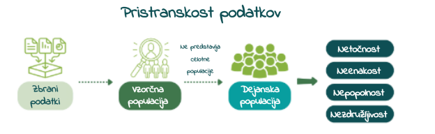
Zmanjšanje pristranskosti podatkov
Zmanjšanje pristranskosti znotraj umetne inteligence se začne z upravljanjem umetne inteligence. Upravljanje UI se nanaša na smernice, ki pomagajo zagotoviti, da so orodja in sistemi UI varni in etični. Odgovorne prakse umetne inteligence, ki poudarjajo preglednost, odgovornost in etične vidike, lahko vodijo organizacije pri krmarjenju s kompleksnostjo zmanjševanja pristranskosti.
Široka zastopanost v virih podatkov pomaga zmanjšati pristranskost. Postopek zbiranja podatkov bi moral zajemati široko paleto demografskih podatkov, kontekstov in pogojev, ki so vsi ustrezno zastopani. Na primer, če podatki, zbrani za orodja za prepoznavanje obrazov, pretežno vključujejo slike belcev, model morda ne bo natančno prepoznal ali razlikoval temnopoltih obrazov. Podobno velja za pristranskost pri označevanju podatkov.
Sintetični podatki so umetno ustvarjeni podatki, ustvarjeni z računalniško simulacijo ali algoritmi, ki nadomestijo vire podatkov iz resničnega sveta. Sintetični podatki so koristna alternativa, kadar podatki niso na voljo in ker nudijo večjo zaščito zasebnosti podatkov. Sintetični podatki blažijo pristranskost tako, da omogočajo namerno ustvarjanje uravnoteženih podatkovnih nizov, ki vključujejo premalo zastopane skupine in scenarije.
Uporaba orodij in ogrodij za algoritemsko pravičnost lahko pomaga pri odkrivanju in ublažitvi pristranskosti v modelih strojnega učenja. AI Fairness 360, odprtokodni komplet orodij, ki ga je razvil IBM, ponuja različne meritve za odkrivanje pristranskosti v virih podatkov in modelih strojnega učenja.
- HOW AI WORKS
- Intro to AI
- Machine Learning
- Training Data and Bias
- Neural Networks
- Computer Vision
- ChatBots and Large Language Models
- Creativity and Imagination
- ETHICS AND AI
- Equal Access and Algorithmic Bias
- Privacy & the Future of Work
- Why AI Matters
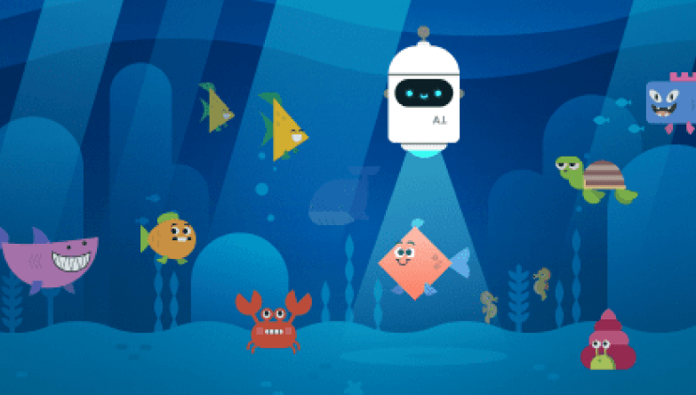
Code.org ponuja zelo dobro aktivnost, da spoznaš osnove UI in strojnega učenja.
Pomagaj UI očistiti oceane tako, da jo naučiš odkrivati smeti. Spoznaj učenje UI in mogoče pristranskosti ter kako lahko UI pomaga pri reševanju težav.
Strojno učenje v praksi
Uporabili bomo Google’s Teachable Machine in z njim naučili stroj, da klasificira sliko bodisi kot kolo ali kot motorno kolo. Spomnimo, da je aplikacije strojnega učenja potrebno naučiti in testirati pred njihovo uporabo v praksi. Zbrali in razvrstili bomo vzorčne primere kategorij, ki jih bo kasneje razvrščal stroj, nato bomo model usposobili (naučili) ter testirali, ali vzorčne slike pravilno kategorizira.
Izvedi naslednja dejanja:
- Prenesi slike koles, ki jih najdeš tukaj.
- Po potrebi prenesi vsebino stisnjene mape (zip) v lokalno mapo na tvojem računalniku. Služila bo za učne podatke aplikaciji strojnega učenja.
- Prenesi slike motornih koles, ki jih najdeš tukaj.
- Po potrebi prenesi vsebino stisnjene mape (zip) v lokalno mapo na tvojem računalniku. Tudi ta vsebina bo služila za učne podatke aplikaciji strojnega učenja.
- Prenesi vse slike, ki jih najdeš tukaj.
- Po potrebi prenesi vsebino stisnjene mape (zip) v lokalno mapo na tvojem računalniku. Služila bo za testne podatke.
- Klikni na Google’s Teachable Machine in izberi Image Project > Standard Image Model.
- Pod Kategorija 1 (Class 1), klikni na: Upload > Choose images from your files > odpri mapo s slikami koles, ki si jo ustvaril(-a) v korakih 1 in 2 in iz nje uvozi shranjene slike.
- Pod Kategorija 2 (Class 2), klikni na: Upload > Choose images from your files > odpri mapo s slikami motornih koles, ki si jo ustvaril(-a) v korakih 3 in 4 in iz nje uvozi shranjene slike.
Izberi Učenje (Training), nato klikni na Učenje modela (Train Model). Model se bo sedaj naučil, kako prepoznati kolesa in motorna kolesa. Počakaj na obvestilo Model naučen / Model usposobljen (Model Trained).
Verjetno boš opazil(-a), da ni potrebno ročno izbirati in vnašati posameznih lastnosti (značilnosti) koles in motornih koles. Algoritmi jih znajo namreč sami poiskati na slikah!

Izvedi naslednja dejanja:
- Pod Predogled (Preview), klikni na puščico poleg spletne kamere (webcam) in izberite vrsto vnosa: Datoteka (File).
- Klikni, da izbereš slike iz datotek na tvojem računalniku (choose images from your files) ter nato izberi testno sliko, izmed slik, ki si jih shranil(-a) v korakih 5 in 6.
- Z miško se premakni navzdol in preveri izhod.
- Ponovi postopek z drugimi slikami ter primerjaj učinek.
Če uporabiš sliko za učenje klasifikatorja, bo stroj že zabeležil ustrezno oznako za dotično sliko. Prikaz te slike stroju v fazi testiranja ne bo omogočil merjenja uspešnosti generalizacije. Zato se morajo učni in testni podatki med seboj razlikovati!
Opomba: Naložiš lahko tudi svoje slike ter z njimi model učiš in testiraš. Tukaj najdeš dober in brezplačen vir najrazličnejših slik.
Rudarjenje podatkov
Znanost o podatkih, zlasti metode strojnega učenja, služijo kot katalizatorji sprememb na različnih področjih, kot so znanost, inženiring in tehnologija, ki pomembno vplivajo na naše vsakdanje življenje. Računalniške tehnike, kot je na primer rudarjenje podatkov (ang. data mining), s katerimi je mogoče presejati obsežne nize podatkov, identificirati zanimive vzorce in konstruirati napovedne modele, postajajo vseprisotne. Vendar ima le nekaj strokovnjakov temeljno razumevanje znanosti o podatkih, še manj jih je aktivno vključenih v izgradnjo modelov iz svojih podatkov. V dobi, ko AI tiho oblikuje naš svet, se morajo vsi zavedati njenih zmogljivosti, prednosti in potencialnih tveganj. Vzpostaviti moramo metode za učinkovito komuniciranje in poučevanje konceptov, povezanih s podatkovno znanostjo, širokemu občinstvu. Načela in tehnike strojnega učenja, znanosti o podatkih in umetne inteligence morajo postati splošno znana.
Rudarjenja podatkov se lahko lotimo tako, da začnemo z vprašanjem, poiščemo ustrezne podatke in nato odgovorimo na vprašanje z iskanjem ustreznih podatkovnih vzorcev in modelov.  V projektu Pumice razvijamo izobraževalne aktivnosti, s katerimi lahko obogatimo različne šolske predmete. Uporabljamo podatke, povezane s predmetom, in jih raziskujemo z uporabo AI in pristopov strojnega učenja. V sodelovanju z učitelji smo razvili učne predloge in razlage ozadja za učitelje in učence.
V projektu Pumice razvijamo izobraževalne aktivnosti, s katerimi lahko obogatimo različne šolske predmete. Uporabljamo podatke, povezane s predmetom, in jih raziskujemo z uporabo AI in pristopov strojnega učenja. V sodelovanju z učitelji smo razvili učne predloge in razlage ozadja za učitelje in učence.
 Aktivnosti in usposabljanje projekta Pumice podpira Orange, program za strojno učenje, ki ima intuitiven vmesnik, interaktivne vizualizacije in vizualno programiranje. Ključ do enostavnosti, ki je potrebna pri usposabljanju, in vsestranskosti za pokrivanje večine osrednjih tem in prilagajanje različnim področjem uporabe je konstrukcija analitičnih cevovodov, podobna kockam Lego, in interaktivnost vseh komponent (glej sliko). Za nadaljnjo podporo poučevanju in osredotočenost na koncepte namesto na osnovno mehaniko, Orange izvaja enostaven dostop do podatkov, ponovljivost s shranjevanjem potekov dela z vsemi različnimi nastavitvami in izbirami, ki temeljijo na uporabniku, ter enostavno prilagajanje z oblikovanjem novih komponent. Kritični vidik usposabljanja vključuje pripovedovanje zgodb s pregledovanjem potekov dela in specializiranimi funkcijami za eksperimentiranje, kot je risanje nizov eksperimentalnih podatkov ali učenje o prekomernem prilagajanju polinomske linearne regresije. Orange je na voljo kot odprtokodna programska oprema in jo dopolnjuje jedrnat videoposnetek za usposabljanje.
Aktivnosti in usposabljanje projekta Pumice podpira Orange, program za strojno učenje, ki ima intuitiven vmesnik, interaktivne vizualizacije in vizualno programiranje. Ključ do enostavnosti, ki je potrebna pri usposabljanju, in vsestranskosti za pokrivanje večine osrednjih tem in prilagajanje različnim področjem uporabe je konstrukcija analitičnih cevovodov, podobna kockam Lego, in interaktivnost vseh komponent (glej sliko). Za nadaljnjo podporo poučevanju in osredotočenost na koncepte namesto na osnovno mehaniko, Orange izvaja enostaven dostop do podatkov, ponovljivost s shranjevanjem potekov dela z vsemi različnimi nastavitvami in izbirami, ki temeljijo na uporabniku, ter enostavno prilagajanje z oblikovanjem novih komponent. Kritični vidik usposabljanja vključuje pripovedovanje zgodb s pregledovanjem potekov dela in specializiranimi funkcijami za eksperimentiranje, kot je risanje nizov eksperimentalnih podatkov ali učenje o prekomernem prilagajanju polinomske linearne regresije. Orange je na voljo kot odprtokodna programska oprema in jo dopolnjuje jedrnat videoposnetek za usposabljanje.
Povzetek
Za ponovitev učne snovi najprej navedi definicijo pojma, nato s klikom pojma preveri svoj odgovor.
Sistemi generativne UI ustvarjajo nove vsebine v obliki slik, besedil, zvoka, videoposnetkov in še več. Delujejo s pomočjo velikih jezikovnih modelov.
Se pogosto uporablja v aplikacijah strojnega učenja. Na izbiro sta dve ali več skupin, pplikacija mora nove podatke razvrstiti v eno od teh skupin.
Model je poenostavljena reprezentacija oziroma predstavitev sveta, zaradi katere se lahko stroj »pretvarja«, da razume svet okrog sebe.
Obdelava naravnega jezika je preučevanje in uporaba tehnik in orodij, ki računalnikom omogočajo obdelavo, analizo, interpretacijo in razmišljanje o človeškem jeziku.
Dobra izbira ustreznih podatkov je ključnega pomena za učinkovite aplikacije strojnega učenja, bolj kot pri drugih vrstah programov.
Pristranskost pomeni imeti predsodke v odnosu do določene identitete, v pozitivnem ali negativnem smislu, namerno ali nenamerno.
So umetno ustvarjeni podatki, ki nadomestijo vire podatkov iz resničnega sveta. Sintetični podatki so koristna alternativa, kadar podatki niso na voljo.
Strojno prevajanje pomeni, da stroj prevede besedilo iz enega v drugi jezik. Dandanes to stroji počnejo s pomočjo nevronskih mrež oziroma globokega učenja.
Algoritmi strojnega učenja analizirajo podatke za prepoznavanje vzorcev, ki jih nato uporabijo za sprejemanje odločitev ali generiranje napovedi.
Naloge
1
Si oskrbnik(-ca) živali v živalskem vrtu in odgovoren(-na) za hranjenje opic. Opice so videti zelo srčkane, vendar moraš paziti, saj nekatere opice grizejo. Za opice iz živalskega vrta že veš, ali grizejo, ali ne. Tem opicam se bodo kmalu pridružile nove in razmisliti moraš kako ugotoviti, katere nove opice grizejo in katere ne – po možnosti ne preblizu njihovih zob.
Vse opice živijo v živalskem vrtu, to pomeni, da že vemo, če grizejo. Razdeljene so na učno skupino (levo) in testno skupino (desno). Za učno skupino so podatki prikazani in na podlagi teh podatkov razmislimo o merilih / pravilih, ki določajo, ali opice grizejo. Nato njihovo zanesljivost preverimo s pomočjo testne skupine.
Opice, ki grizejo
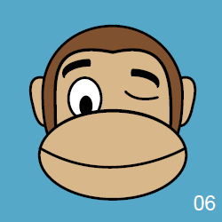
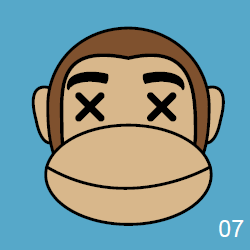
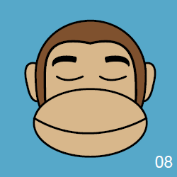
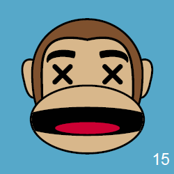
Opice, ki ne grizejo
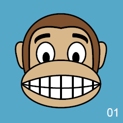
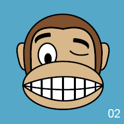
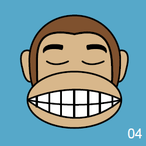
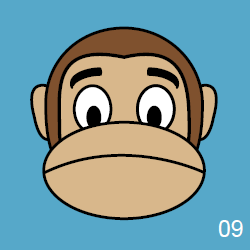
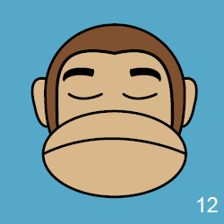
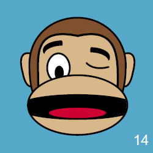
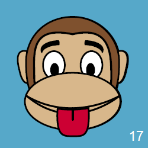
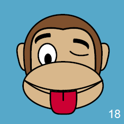
1 nadaljevanje
(a) Sestavi pravila, ki določajo ali določena opica grize. Rešitev (a)
(b) Preveri zanesljivost pravil tako, da jih uporabiš pri razvrščanju opic iz testne skupine.
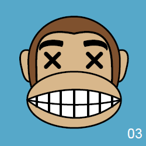
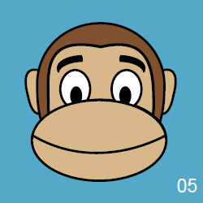
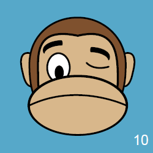
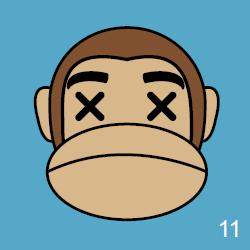
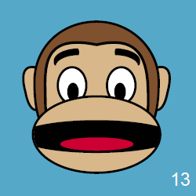
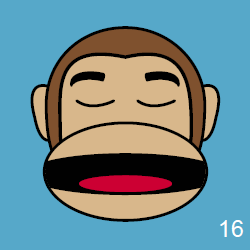
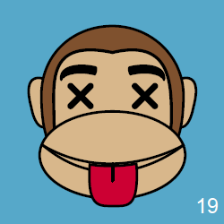
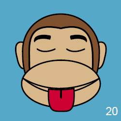
Naloge
2
Še vedno si oskrbnik(-ca) živali v živalskem vrtu in odgovoren(-na) za hranjenje opic. Ta naloga je enaka, kot prejšnja, le da je težja, saj je v živalskem vrtu zdaj več opic. Opice so še vedno razdeljene na učno skupino (levo) in testno skupino (desno).
Opice, ki grizejo
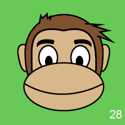
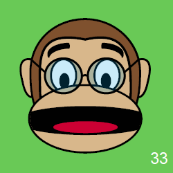
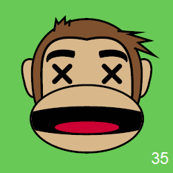
Opice, ki ne grizejo
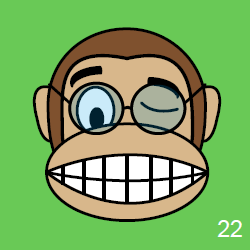
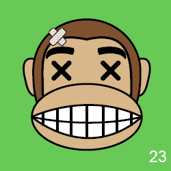
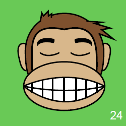
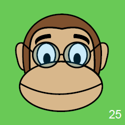
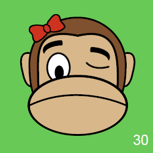
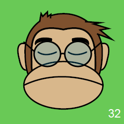
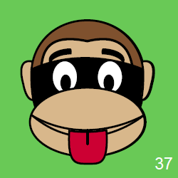
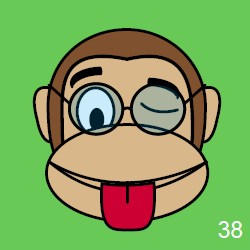
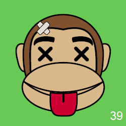
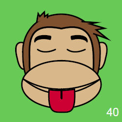
2 nadaljevanje
(a) Sestavi pravila, ki določajo ali določena opica grize. Rešitev (a) in opomba (b)
(b) Preveri zanesljivost pravil tako, da jih uporabiš pri razvrščanju opic iz testne skupine.
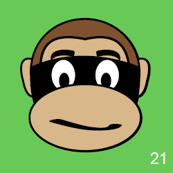
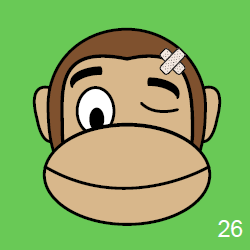
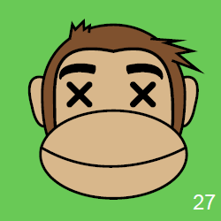
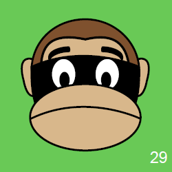
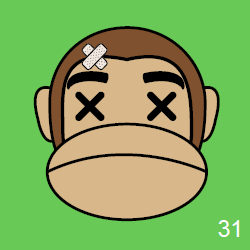
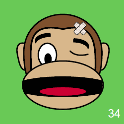
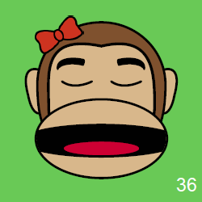
Umetna inteligenca okoli nas
Druga skrajnost v zvezi z uporabo UI je neselektivna uporaba tehnologije, ali tudi zloraba tehnologije. UI deluje drugače kot človeška inteligenca. Sistemi UI lahko zaradi narave specifičnih okoliščin, zaradi njihove zasnove ali zaradi podatkov samih delujejo drugače od pričakovanega.
Na primer, aplikacija, ki je bila razvita na podlagi določenih podatkov za določen namen, ne bo delovala enako dobro na podlagi drugačnih podatkih za drugačen namen. Dobro je poznati omejitve UI in jih odpraviti. Torej ne moremo preprosto preklopiti na UI, temveč se moramo seznaniti s prednostmi in omejitvami njene uporabe.
Ohranjanje stereotipov
Google Prevajalnik se uči prevajati s pomočjo interneta. Z rudarjenjem podatkov se uči iz informacij, prosto dostopnih na spletu. Poleg jezika se UI nauči, na primer, da je med mehaniki več moških kot žensk, med zdravstvenimi tehniki pa več žensk kot moških. UI ni sposobna razlikovati med tem, kaj je »resnica« in kaj je posledica stereotipov in drugih predsodkov. Na ta način Google Prevajalnik promovira in širi informacije o vsem, kar se nauči, in s tem še bolj utrdi stereotipe.
Oglejmo si primer, ki ga prikazuje slika. Ko s pomočjo Google Prevajalnika prevedemo besedilo iz francoščine v angleščino in nato ponovno nazaj v francoščino, se mehanik (v ženskem spolu) spremeni v mehanika (v moškem spolu) in medicinski tehnik (v moškem spolu) v medicinskega tehnika (v ženskem spolu).
Težave se v delovanje UI prikradejo takrat, ko se posamezen primer razlikuje od večine (ne glede na to, ali gre zares za večino v resničnem svetu, ali le za večino po podatkih interneta).
Aktivnost
Poskusi v Google Prevajalniku izslediti kakšen stereotip. Poigraj se s prevajanjem v različne jezike in iz njih. S klikom na dve puščici med obema poljema obrni smer prevajanja.
Nekateri jeziki, na primer turščina, ne poznajo slovnične kategorije spola. Pri prevajanju iz turškega jezika in v turščino se pokažejo številni stereotipi. V turščini in v številnih drugih jezikih je namreč nakazana moška spolna nevtralnost (raba moških generičnih oblik v položajih, ko so mišljeni osebki obeh spolov) kot odraz »naravnega« jezikovnega stanja. V zgornjem primeru je nenavadno to, da se spremeni spol samostalnika pri prevodu iz angleščine v francoščino.
Sistemi UI lahko pripravijo različne napovedi, priporočila ali odločitve. Verjetnost napovedi je pogosto izražena v odstotkih. Ta številka nam pove, kako verjetne so po lastni oceni sistema UI njegove napovedi.
Po svoji naravi so lahko napovedi napačne. Velikokrat so napake sprejemljive, v nekaterih primerih pa ne. Poleg tega obstaja veliko različnih načinov izračunavanja stopnje napake, po različnih merilih – in programer izbere tisto, ki se mu zdi najprimernejša. Pogosto se zanesljivost napovedi spreminja glede na značilnosti vhodnih podatkov.
Iskanje informacij
Junija 1993 je bilo v spletu objavljenih le 130 strani. Leto kasneje je število naraslo na skoraj 3000. V začetku leta 1996 jih je bilo že 100.000. Po različnih ocenah naj bi jih bilo jeseni leta 2022 že 1,7 milijarde.
Ta eksplozija spletnih strani ne bi imela prav veliko smisla, če nam ne bi omogočala iskanja točno tistih informacij, ki jih želimo. In prav to počnejo spletni iskalniki. Odlikujeta jih enostaven vnos s pomočjo tipkovnice ter praktično brezhibno oziroma skoraj nevidno delovanje, kadar so integrirani v brskalnik. Preberejo naše na hitro in pogosto napačno napisane poizvedbe in nato iz spleta izvlečejo besedila, slike, videoposnetke za vse vrste iskanih vsebin.
Aktivnost
S spodnjega seznama izberi iskalnik in ga uporabljaj v naslednjem tednu:
- Ali so rezultati iskanja tako dobri kot pri iskalniku, ki ga običajno uporabljaš?
- Iz katerih informacijskih virov črpa iskalnik? Ali so rezultati, ki jih prikaže, odvisni od drugih iskalnikov?
- Preberi, kaj je o iskalniku napisano v razdelkih Vizitka, Politika zasebnosti ali Pogoji uporabe.
- Čemu so (glede na zapisano) namenjeni tvoji podatki? Ali iskalnik omogoča, da spremeniš privzete nastavitve zasebnosti?
Ko boš zaključi(-a), si oglej opise teh iskalnikov s klikom na spodnji gumb.
Iskalniki so torej UI, ki jo imate vedno pri roki. To je doslej najbolj izpopolnjen način uporabe UI, ki se ga redno poslužujemo praktično vsi. Učinkovitost spletnih iskalnikov je posledica:
- eksplozije vsebin na svetovnem spletu,
- sposobnosti iskalnika, da to vsebino osmisli * in označi za prihodnje poizvedbe (indeksiranje),
- sposobnosti iskalnika, da razume *, kar ga sprašujete in
- sposobnosti iskalnika, da najprej prikaže najustreznejše vsebine (razvrščanje).
Kaj in kako vprašati?
Različne študije v Evropi in v svetu kažejo, da se uporabniki srečujejo z mnogimi težavami pri spletnem iskanju informacij. Pogosto so razočarani, ko njihovo iskanje ne obrodi nobenih rezultatov. Ne vedo, kako oceniti ustreznost rezultatov iskanja. Mlajši uporabniki imajo pri iskanju informacij na spletu težave z ustvarjanjem iskalnih poizvedb, z izbiro ustrezne spletne strani s seznama rezultatov iskanja, s pravilnim črkovanjem iskanih izrazov in z razumevanjem jezika, ki je prikazan v rezultatih iskanja. Poznavanje različnih tehnik iskanja je uporabnikom v veliko pomoč pri izkorišanju potenciala spletnih iskalnikov.
Strojno učenje
Algoritem je določeno zaporedje navodil za izvedbo naloge. Nalogo razdeli na preproste, lahko razumljive korake, kot dobro napisan recept. Programski jeziki so jeziki, ki jim računalnik lahko sledi in jih izvaja. Delujejo kot most med tem, kar razumemo, in tem, kar lahko razume stroj. Algoritem, zapisan v programskem jeziku, postane program. Aplikacije so programi, napisani za končnega uporabnika.
Tradicionalni programi sprejemajo podatke in sledijo navodilom, da dobijo rezultat. Številni zgodnji programi UI so bili v tem pogledu tradicionalni. Ker se navodila ne morejo prilagajati podatkom, ti programi niso bili prav uspešni pri nalogah, kot je na primer napovedovanje na podlagi nepopolnih informacij in naravna obdelava jezika (ang. natural language processing – NLP).
Spletne iskalnike poganjajo tradicionalni algoritmi in algoritmi strojnega učenja (ang. machine learning algorithms). Za razliko od prvih slednji analizirajo podatke za prepoznavanje vzorcev, ki jih nato uporabijo za sprejemanje odločitev ali generiranje napovedi. Lahko bi rekli, da na podlagi podatkov (dobrih in slabih primerov) ustvarijo svoj lasten »recept« za delovanje.
Takšni algoritmi so primerni za zelo kompleksne situacije z veliko manjkajočimi podatki. Sposobni so sami spremljajati izvajanje zadanih nalog in povratne informacije uporabiti za izboljšanje svojega delovanja.
V tem so pravzaprav podobni ljudem, zlasti dojenčkom, ki se veščin učijo izven izobraževalnega sistema. Dojenčki opazujejo, ponavljajo (posnemajo), se učijo, preizkušajo naučeno in se izboljšujejo. Če je treba, tudi improvizirajo. Vendar je podobnost med stroji in ljudmi precej površinska. Učenje ljudi je drugačno, veliko bolj diferencirano, podrobno in zapleteno kot učenje strojev.
Simbolni pristop k umetni inteligenci
Znan tudi kot »na pravilih temelječa« ali »klasična« umetna inteligenca, ki temelji na logiki in apriornem znanju, ki ga zagotavljajo človeški strokovnjaki. Zgodovinsko gledano je simbolni pristop starejši, ustreza ekspertnim sistemom, v zadnjem času pa tako imenovanemu semantičnemu spletu.
Pristop strojnega učenja
Znan tudi kot »digitalni« pristop, temelji na podatkih in učenju. Numerični pristop ali pristop strojnega učenja (ang. machine learning – ML) vključuje umetne nevronske mreže in globoko učenje, kadar je več plasti takšnih računalniških enot. Učinkovit je postal v zadnjem času in prav ta pristop nam omogoča samodejno prepisovanje besedil, ki jih narekujemo, ali prepoznavanje predmetov na slikah. Zahteva veliko podatkov in temelji na statističnih pristopih.
Strojno učenje
Problem klasifikacije
Ena od pogostih nalog, ki se uporablja v aplikacijah strojnega učenja, je klasifikacija. Je na fotografiji pes ali mačka? Ali ima učenec težave pri reševanju nalog, ali je opravil preizkus znanja? Stroj ima na izbiro dve ali več skupin. Aplikacija mora nove podatke razvrstiti v eno od teh skupin.
Vzemimo za primer komplet igralnih kart, ki ga po nekem ključu razdelimo na dva kupčka, skupino A in skupino B. Naslednjo karto (karov as) moramo razvrstiti v skupino A ali skupino B.
Najprej moramo razumeti, po kašnem ključu je razdeljen komplet kart – torej potrebujemo primere. Izberemo štiri karte iz skupine A in štiri iz skupine B. Teh osem primerov predstavlja naše učne podatke – podatke, ki nam pomagajo prepoznati vzorec, oziroma, nas s tem »učijo«, kako priti do rezultata.
Takoj ko vidimo razporeditev (gornja slika), nas večina ugane, da karov as spada v skupino B. Pri tem ne potrebujemo posebnih navodil, človeški možgani so čudežni iskalec vzorcev. Kako pa bi to nalogo opravil stroj?
Algoritmi strojnega učenja temeljijo na uveljavljenih statističnih teorijah. Različni algoritmi temeljijo na različnih matematičnih enačbah, ki jih je treba skrbno izbrati, da ustrezajo dani nalogi. Naloga programerja je, da izbere podatke, analizira, katere značilnosti podatkov so pomembne za določen problem, in izbere pravilen algoritem.
Pomen podatkov
Vendar pa bi lahko v omenjenem primeru klasifikacije šlo narobe več stvari. Oglej si spodnjo sliko. V skupini 1 je premalo kart, da bi lahko ugibali. V skupini 2 je sicer več kart, vendar so vse enake barve, zato ne moremo predvideti, kam uvrstiti karo. Če skupine ne bi bile enako velike, bi v skupini 3 karte s številkami spadale v skupino A, karte s podobami pa v skupino B.
Problemi strojnega učenja so običajno bolj odprti in vključujejo nabore podatkov, veliko večje od kompleta kart. Učne podatke je treba izbrati s pomočjo statistične analize, sicer se vanje prikradejo napake. Dobra izbira podatkov je ključnega pomena za učinkovite aplikacije strojnega učenja, bolj kot pri drugih vrstah programov. Strojno učenje potrebuje veliko število relevantnih podatkov. Osnovni model strojnega učenja mora vsebovati najmanj desetkrat več podatkov, kot je skupno število značilnosti. Kljub temu je strojno učenje posebej primerno tudi za obdelavo neurejenih in nasprotujočih si podatkov.
Strojno učenje
Pridobivanje značilnosti
Ko smo si v prejšnjem primeru ogledali skupini A in B, smo verjetno najprej opazili barvo kart. Šele nato pa številko ali črko. Pri algoritmih je treba vse te posamezne značilnosti vnesti posebej. Algoritem ne more samodejno vedeti, kaj je pomembno za dano nalogo.
Pri izbiri značilnosti si morajo programerji zastaviti številna vprašanja. Koliko značilnosti je premalo, da bi bile uporabne? Koliko jih je preveč? Katere značilnosti so pomembne za nalogo? Kakšno je razmerje med izbranimi značilnostmi – ali je ena značilnost odvisna od druge? Ali je z izbranimi značilnostmi mogoče doseči natančen rezultat?
Postopek
Ko programer ustvarja aplikacijo, vzame podatke, iz njih pridobi oziroma izvleče značilnosti, izbere ustrezen algoritem strojnega učenja (matematična funkcija, ki določa postopek) in ga usposobi z uporabo označenih podatkov (v primeru, ko je izhod znan – npr. skupina A ali skupina B), tako da stroj razume vzorec, ki se skriva za problemom.
Za stroj razumevanje pomeni zapis v oblik niza številk ali uteži, ki jih dodeli vsaki značilnosti. S pravilno dodelitvijo uteži lahko izračuna verjetnost, da nova karta spada v skupino A ali B. Običajno v fazi učenja programer pomaga stroju tako, da ročno spremeni nekatere vrednosti (uglaševanje). Za tem je treba program pred začetkom uporabe preizkusiti. Pri tem se vanj vnesejo takšni označeni podatki, ki niso bili uporabljeni v fazi učenja, imenujemo jih testni podatki.
Nato se oceni učinkovitost stroja pri napovedovanju rezultatov. Ko učinkovitost doseže zadovoljivo stopnjo, lahko začnemo z uporabo programa, ki je sedaj pripravljen za vnos povsem novih podatkov, na podlagi katerih sprejema odločitve ali generira napovedi.
Algoritem nato lastno delovanje v realnem času nenehno spremlja in se izboljšuje (prilagoditev uteži za boljše rezultate). Učinkovitost delovanja v realnem času se pogosto razlikuje od izmerjene učinkovitosti v fazi preizkušanja (testiranja). Ker je eksperimentiranje z resničnimi uporabniki drago, zahteva veliko truda in pogosto s seboj prinaša določeno tveganje, se algoritmi praviloma preizkušajo na podlagi preteklih uporabniških podatkov, zaradi česar pa morda ni možno oceniti vpliva na vedenje uporabnikov. Zato je pomembno, da se pred uporabo aplikacij strojnega učenja opravi celovita ocena njihovega delovanja:
Morajo biti podatki vedno označeni? Preberite več o nadzorovanem, nenadzorovanem in spodbujevanem učenju.
Strojno učenje
Evalvacija
Algoritem nato lastno delovanje v realnem času nenehno spremlja in se izboljšuje (prilagoditev uteži za boljše rezultate). Učinkovitost delovanja v realnem času se pogosto razlikuje od izmerjene učinkovitosti v fazi preizkušanja (testiranja). Ker je eksperimentiranje z resničnimi uporabniki drago, zahteva veliko truda in pogosto s seboj prinaša določeno tveganje, algoritme praviloma preizkušajo na podlagi preteklih uporabniških podatkov, zaradi česar pa morda ni možno oceniti vpliva na vedenje uporabnikov. Zato je pomembno, da pred uporabo aplikacij strojnega učenja opravijo celovito ocena njihovega delovanja:
Več o podatkih
Podatki (ang. data) se v splošnem vedno nanašajo na določeno entiteto iz sveta okrog nas – na primer na osebo, predmet ali dogodek. Vsako entiteto lahko opišemo s številnimi atributi (lastnostmi, značilnostmi ali spremenljivkami). Na primer, ime, starost in ime so nekatere izmed lastnosti vsakega uporabnika. Celota teh lastnosti predstavlja podatke, ki jih imamo o uporabniku. Ti podatki sicer niti približno niso enaki entiteti kot takšni (uporabniku samemu), vendar nam o njej povedo vsaj nekaj.
Podatkovni niz (ang. data set) – tudi: nabor podatkov, sklop podatkov – vsebuje podatke o zbirki entitet, pri čemer so ti podatki razporejeni v vrstice in stolpce. Evidenca prisotnosti delavcev na delovnem mestu je primer podatkovnega niza. Vsaka vrstica vsebuje zapis o enem delavcu/delavki. Stolpci pa lahko, na primer, vsebujejo podatke o prisotnosti ali odsotnosti na določen dan v tednu. Vsak stolpec torej pomeni določen atribut.
Podatke ustvarimo z izbiro in merjenjem atributov; vsak podatek je rezultat človeških odločitev in izbir. Zato je ustvarjanje podatkov subjektiven, parcialen in neurejen proces, dovzeten za različne tehnične težave. Poleg tega ima lahko to, kar merimo in česar ne, bistven vpliv na pričakovane rezultate.
Podatkovne sledi (ang. data traces) se nanašajo na podatke, ki so ustvarjeni kot rezultat aktivnosti uporabnikov, na primer število klikov z miško, število odprtih strani, čas interakcij ali število pritiskov na tipkovnico. Metapodatki (ang. metadata) so podatki, ki opisujejo druge podatke. Izpeljani podatki (ang. derived data) so podatki, izračunani ali izpeljani iz drugih podatkov, na primer posamezen rezultat nekega učenca je podatek, povprečje celega razreda pa je izpeljan podatek. Pogosto so izpeljani podatki bolj uporabni pri raznih vpogledih, iskanju vzorcev in napovedovanju. Aplikacije za strojno učenje ustvarjajo izpeljane podatke in jih povežejo z metapodatkovnimi sledmi ter tako ustvarjajo poglobljene učne modele, ki pomagajo pri personalizaciji.
Več o masovnih podatkih
Splošna praksa shranjevanja vseh vrst podatkov se imenuje masovni podatki (ang. Big data). To je smiselno, saj je shranjevanje podatkov postalo zelo poceni, zmogljivi procesorji in algoritmi (zlasti obdelava naravnega jezika in strojno učenje) pa olajšajo analizo masovnih podatkov.
Kot je opisano v videoposnetku »Podatki vseh oblik in velikosti«, je za masovne podatke značilna velika količina (volume), hitro nastajanje (velocity), raznolikost (variety) podatkov, ki se ustvarjajo iz več virov. Tako pridobljeni podatki so običajno nepopolni in nenatančni (verodostojnost), njihova pomembnost pa se s časom spreminja (nestanovitnost). Za združevanje, obdelavo in vizualizacijo tovrstnih podatkov so potrebni zapleteni algoritmi. Vendar pa so lahko sklepi, ki izhajajo iz njih, zlasti v kombinaciji s tradicionalnimi podatki, zelo močni in zato vredni truda.
Nekateri strokovnjaki presegajo 3V (oziroma 4V, 5V, 7V, 9V ali najnovejšo 10V) in poudarjajo tri osi, ki sestavljajo velike podatke:
- Tehnologija, ki omogoča zbiranje, analiziranje, povezovanje in primerjanje velikih podatkovnih baz.
- Analiza, ki v velikih podatkovnih nizih prepoznava vzorce za podajanje gospodarskih, družbenih, tehničnih in pravnih zahtev.
- Prepričanje, da veliki podatkovni nizi ponujajo višjo obliko inteligence in znanja, ki lahko ustvarja vpoglede, ki so bili prej nemogoči, z auro resnice, objektivnosti in natančnosti.
Zakonodaja, ki jo moraš poznati
Zaradi bistveno nižjih stroškov shranjevanja podatkov se danes shranjuje vse več podatkov in metapodatkov, ki se tudi hranijo veliko dlje. To lahko privede do kršitev zasebnosti in pravic. Zakoni, kot je Splošna uredba o varstvu podatkov (GDPR), odvračajo od takšnih praks in državljanom EU omogočajo večji nadzor nad njihovimi osebnimi podatki. Zagotavljajo pravno izvršljive predpise o varstvu podatkov v vseh državah članicah EU.
V skladu z omenjeno uredbo so osebni podatki vse informacije v zvezi z določeno ali določljivo osebo (osebo, na katero se podatki nanašajo).
Pravice, določene s Splošno uredbo o varstvu podatkov, vključujejo:
- pravico do dostopa, na podlagi katere morajo biti posamezniki obvezno seznanjeni s tem, kateri podatki se zbirajo o njih;
- pravico do obveščenosti o načinih uporabe njihovih podatkov;
- pravico do izbrisa podatkov, ki posamezniku, katerega podatke je zbrala določena platforma, omogoča, da zahteva odstranitev teh podatkov iz nabora podatkov te platforme (ki so lahko predmet prodje tretjim osebam);
- pravico do pojasnila, pri čemer je treba zagotoviti pojasnilo, kadarkoli je to potrebno, v zvezi z avtomatiziranimi postopki odločanja, ki vplivajo na posameznika.
Uredba sicer dovoljuje zbiranje nekaterih podatkov v okviru zakonitega interesa in uporabo izpeljanih, združenih ali anonimiziranih podatkov za nedoločen čas in brez privolitve. Novi Akt o digitalnih storitvah omejuje uporabo osebnih podatkov za namene ciljnega oglaševanja. Omenimo še Zasebnostni ščit EU-ZDA, ki krepi pravice do varstva podatkov za državljane EU v primeru, ko so bili njihovi podatki preneseni zunaj EU.